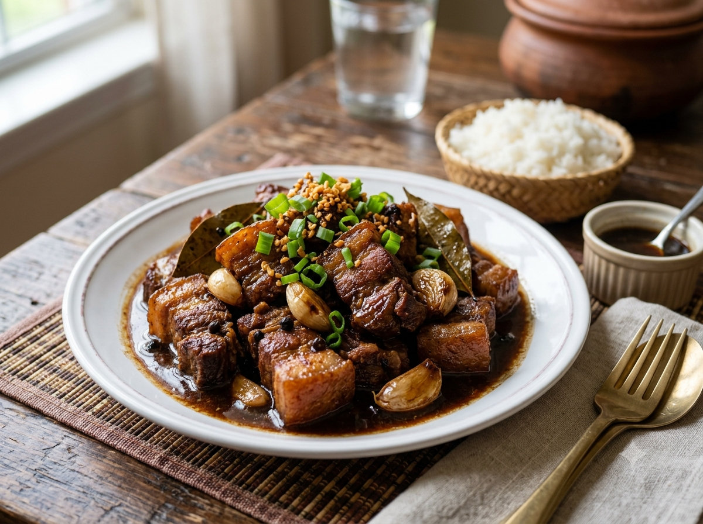

Home
Chicken Adobo

A classic Filipino chicken adobo cooked in soy sauce, vinegar, garlic, and spices.
Ingredients
- 1 kg chicken, cut into serving pieces
- ½ cup soy sauce
- ⅓ cup vinegar
- 1 cup water
- 6 cloves of garlic, crushed
- 3 bay leaves
- 1 teaspoon whole black peppercorns
- 1 tablespoon cooking oil
- 1 teaspoon sugar, optional
Instructions
- Place the chicken in a bowl and add the soy sauce and garlic.
- Marinate the chicken for at least 30 minutes.
- Heat oil in a pan and lightly brown the chicken.
- Add the marinade, water, bay leaves, and peppercorns.
- Bring the mixture to a boil.
- Add the vinegar and do not stir for about 3 minutes.
- Lower the heat, cover the pan, and simmer for 30 to 40 minutes.
- Add sugar if you want a slightly sweeter adobo.
- Cook until the chicken is tender and the sauce has reduced.
- Serve with hot rice.